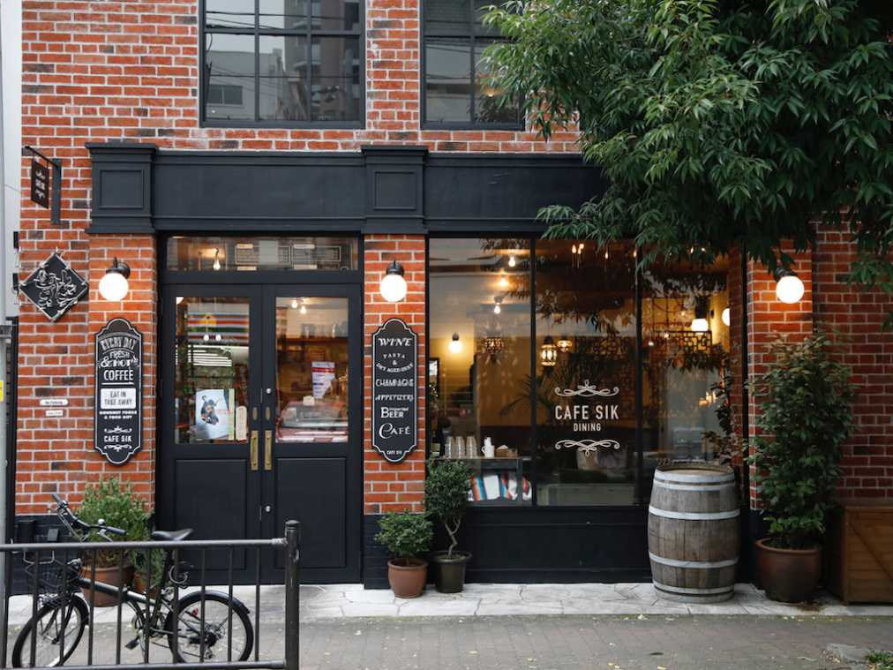

あなたの日常は、いつもの毎日から
あなたの日常の物語は、いつもの毎日から始まります。
あなたから始まる物語は朝の朝食ブレイクファーストから
忙しくてランチを食べる時間がない。でも、小腹は満たしたい。
次の取引先まで空いた時間で小休憩したい。
次の約束まで、時間をつぶしたい
"限られた時間を有効に使いたい"
そんなひとりひとりに合った時間にするため
我々はジャングルの奥地に向かった
新たなる時代を求め探求する時代
~coffee time~
coffee timeの由来と歴史
coffee timeの由来
coffeeは別名「DIO」と呼びます。「DIO」とはジョジョの奇妙な冒険第３部のラスボスで時を止めます。
時が止まったように感じるほどスピーディーな商品提供と気持ちの良いサービスを心掛けています。
coffee timeの歴史
1980年だったか2000年だったかに代々木にオープンしたセルフサービスのコーヒーショップからcoffee timeは始まりました。
おひとりおひとりの空間を大切にした、空間設計と落ち着いた雰囲気でお客様に心地よい日常を提供し続け、今では皆様に溺愛されています。
質問を質問で返すなッッ！！
吉良吉影の名言で質問を質問で返すとは正気の沙汰ではないと思った際に発言した言葉です。
king gnu
白日を始め最近ではSPECIALZなど多くの人々の耳に残る名曲を生み出しています。
ちなみに私のおすすめは王様ランキングの主題歌「裸の勇者」と圧倒的なテンアゲ曲「飛行艇」です。
快適な空間・サービスへのこだわり
圧倒的なッッ快適な空間。丁寧な接客をこだわりやれやれだぜと言ったところ